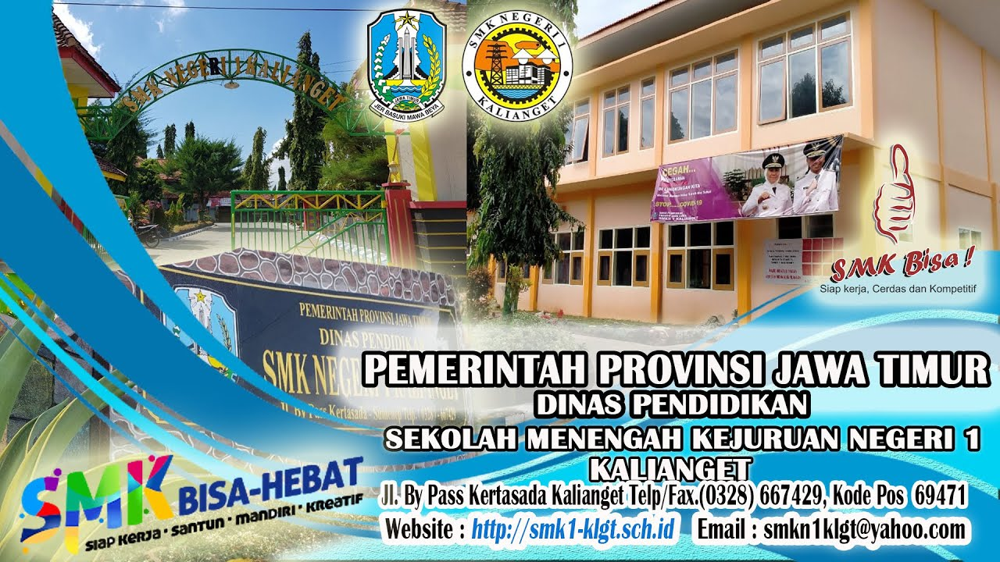

VISI
Mewujudkan Sumber Daya Manusia yang Berakhlak Mulia yang Mampu Bersaing Secara Global.
MISI
- Menciptakan suasana yang kondusif untuk mengembangkan potensi siswa melalui penekanan pada penguasaan kompetensi bidang ilmu pengetahuan dan teknologi serta Bahasa Inggris.
- Meningkatkan penguasaan Bahasa Inggris sebagai alat komunikasi dan alat untuk mempelajari pengetahuan yang lebih luas.
- Meningkatkan frekuensi dan kualitas kegiatan siswa yang lebih menekankan pada pengembangan ilmu pengetahuan dan teknologi serta keimanan dan ketakwaan yang menunjang proses belajar mengajar dan menumbuhkembangkan disiplin pribadi siswa.
- Menumbuhkembangkan nilai-nilai ketuhanan dan nilai-nilai kehidupan yang bersifat universal dan mengintegrasikannya dalam kehidupan.
- Menerapkan manajemen partisipatif dengan melibatkan seluruh warga sekolah, Lembaga Swadaya Masyarakat, stake holders dan instansi serta institusi pendukung pendidikan lainnya.
TUJUAN
- Siswa memiliki kompetensi penguasaan konsep untuk seluruh mata pelajaran secara komprehensif dan benar sehingga mampu berkompetisi ditingkat nasional dan mampu berkompetisi di tingkat internasional.
- Siswa mampu menggunakan Bahasa Inggris sebagai alat komunikasi untuk mendapatkan pengetahuan yang lebih luas.
- Siswa mampu membangun kebiasaan yang aktif untuk mencari informasi menggunakan teknologi informasi.
- Sekolah memiliki sarana dan prasarana penunjang PBM yang lengkap.
- Sekolah memiliki guru dan tenaga pendukung yang handal untuk mendukung seluruh manajemen sekolah.
- Sekolah memiliki hubungan kemitraan yang baik dengan seluruh warga sekolah, stake holders dan instansi serta institusi pendukung pendidikan lainnya.
- Siswa memiliki, mengaplikasikan dan meningkatkan nilai-nilai ketuhanan serta nilai-nilai kehidupan yang bersifat universal dalam kehidupannya.